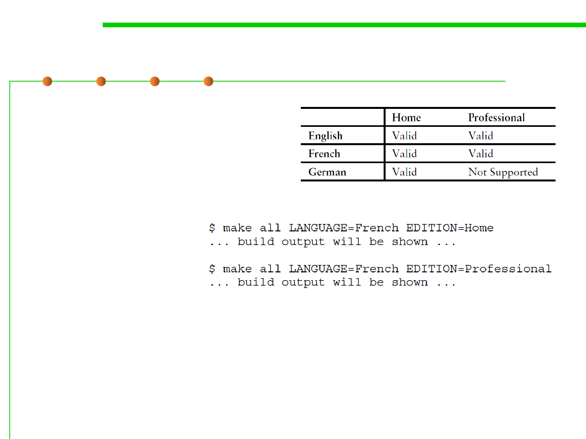

2.2 Process, Systems, and Tools of Software Construction
Building Different Editions of the Software
▪ Building different editions
– Language and culture, localization
– Hardware variations
– Pricing options
▪ Specifying the Build Variant:(例如：语言和版本)
▪ Varying the Code:(对代码的定制调整)
– Line-by-line variation 逐行调整，对代码进行条件编译，根据变量的值，实现不同行为
– Per-variant files 每个变量一个文件，每个变量对应的源代码放到不同文件中，如不同语言针
对不同的功能
– Per-variant directories 每变量一个目录
– Per-variant build description files 每变量一个构造描述文件